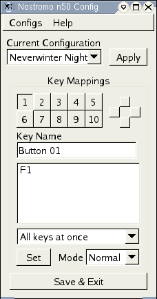

The nostromo_n50 configuration tools are designed to support the excellent Belkin Nostromo n50 speedpad for playing games under the X Window system. The tools consist of a configuration GUI and a daemon process. The GUI is used to configure sets of key mappings and select the current map, and the daemon translates Nostromo key hits to X events.
The tools support multiple configurations, so you can have different mappings for the same game or completely different mappings for different games. All you have to do is select the configuration you want from the GUI.
The Nostromo n50 (as you may have noticed) has three lights towards the front left corner of the device. These can be used to flag different 'modes' of operation for the device. The easiest way to handle the modes is to think of the lights representing four different modes – one for each color light and 'normal' mode in which no lights are on. Buttons can be mapped to 'shift' into a mode – where the device flips modes only while the button is pressed, then returns to its previous mode. Buttons can also be mapped to 'lock' a mode, in which the device is flipped to a different mode. The lights will be toggled to always reflect which mode the device is in. The modes can be useful in more complex configurations where entirely different sets of keys are needed.
Note: When using the modes always remember to map not only keys that change to a different mode (normal -> red) but also keys to get back, otherwise you can easily get stuck in a mode with no way to get back to normal!

The
main bit that will greet you is the configuration GUI. It's a happy
little bundle of buttons that lets you set up the way you want the
Nostromo to behave. The configuration GUI stores its information in a
file called .nostromorc_n50 in
your home directory.
The major pieces are the configuration selection, the key mappings and at the bottom the Exit button.
The Nostromo n50 tools support multiple configurations, this control selects the current configuration from those defined. When you exit the GUI this is stored as the Current Configuration.
Simply select a configuration in the “Current Configuration” list to set that as the current configuration for configuration or use by the daemon.
Pressing the Apply button saves the configuration and signals the nostromo_daemon process to reread the configuration file.
The nostromo_daemon process is launched or signalled to reread its configuration when Save & Exit is pressed to exit the configuration GUI.
To create a configuration, select the New configuration option from the Configs menu. If you already have a configuration that you want to use as a starting point, you can select it and the newly created configuration will be a copy.
If you select Rename configuration from the Configs menu the app will prompt you for a new name for the configuration. This is a good time to correct that embarrassing spelling mistake that inevitably creeps in.
Select Delete Configuration from the Configs menu to delete a configuration. Caution: This is permanent.
There are buttons for each of the 10 main Nostromo keys, plus the thumb pad. Selecting any of the buttons brings up the current details for that key.
Each key can have a custom label associated it, to remind you what the key is intended to do.
Below that is the list of keys mapped to the currently selected key. Using the Set button allows you to configure the keys that map to the current button.
Since there are a number of strange things that may need to be mapped to a Nostromo key (I usually map the Shift key to one of the thumbpad positions) there is a Key Type list to select what the key is for:
|
Key Type |
Meaning |
|---|---|
|
All keys at once |
Press and hold all mapped keys until Nostrom button is released |
|
Keys in sequence |
Press and release all mapped keys in sequence when the Nostromo button is pressed |
|
Normal Shift |
Mode shift to normal, returning to previous mode when Nostromo button released |
|
Normal Lock |
Set Nostromo to Normal mode |
|
Blue Shift |
Mode shift to blue, returning to previous mode when Nostromo button released |
|
Blue Lock |
Set Nostromo to Blue mode |
|
Green Shift |
Mode shift to green, returning to previous mode when Nostromo button released |
|
Green Lock |
Set Nostromo to Green mode |
|
Red Shift |
Mode shift to red, returning to previous mode when Nostromo button released |
|
Red Lock |
Set Nostromo to Red mode |
|
Shift Key |
Hold the Shift key as long as the Nostromo button is pressed |
|
Control Key |
Hold the Control key as long as the Nostromo button is pressed |
|
Alt Key |
Hold the Alt key as long as the Nostromo button is pressed |
Near the bottom right corner of the GUI is a Mode list. Selecting one of the modes from this list switches the key mappings to match the selected mode. [I've actually never found the modes useful, but they may prove their worth yet.]